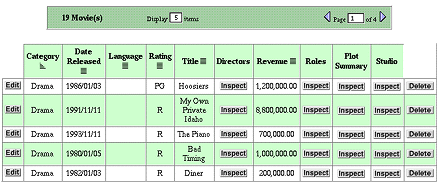

| PATH |

You can use the Properties display of the WebAssistant to specify various display characteristics of properties, such as formatting, color, alignment, and the representation of relationships. The fields and controls for setting these characteristics are on the right half of the display. Here is an example:
Let's go over the various elements of this part of the user interface:
The items in the pop-up list identify reusable components in the Direct to Web framework called property-level components, which are used to render the properties on the pages you see in your application. Each property in a page of any type is initially shown in a default way for that type using a default property-level component.
The display components available for the currently selected property offer characteristics suitable to the data type and function of the attribute. A few examples might help to clarify this statement:
You can click the Info button in the WebAssistant to get a short description of the currently selected display component.
The three most common display characteristics for properties are alignment, formatting, and color. Each of these has their own controls or fields in the right side of the Property display:
Properties that are relationships (instead of attributes) have their own set of display components that you can use. Take the following list page as an example:
There are four relationships on this page. Two are to-one relationships (Studio and Plot Summary) and two are to-many relationships (Directors and Roles). By default, all to-many relationships are displayed using DisplayToManyFault, and to-one relationships are displayed using DisplayToOneFault. "Fault" indicates that the records in the relationship aren't displayed until they are asked for; that is, until the user clicks Inspect. When you click Inspect, a list page appears, showing all the records in the relationship (such as all roles in the movie).
You can change the display component for the relationship to get a different presentation. Consider the Roles relationship in the Movie-List page example above. Using your browser, navigate to the list page for the Movie entity. Move the roles property to the Show list using the WebAssistant and choose D2WDisplayToManyBrowser from the component pop-up list. The right side of the WebAssistant should look similar to the following example:
In addition to the Alignment pop-up list, the WOComponent
group includes two controls specific to the display of relationships.
The items in the Target Keys browser are selected attributes of
the destination entity; these "target keys" refer to a string
identifying a to-many relationship. In this case the Movie Roles
entity has one target key, roleName.
In addition, Direct to Web provides a default key called userPresentableDescription,
which is usually a combination of the relationship's keys, if
there are multiple keys.
The Allow Collapsing checkbox, when checked, causes the relationship initially to be presented as a disclosure triangle followed by a number and the plural form of the display name for the destination entity (for example, "6 Movie Roles"). When the user clicks the triangle, the table cell expands to display the items in the form appropriate to the display component; in this case, a browser:
To get a better sense of the control you have over the presentation of relationships, set the display component for the Movie Roles relationship to DisplayToMany and uncheck the Allow Collapsing checkbox. When you update your browser, a cell in the Roles table should look similar to this
To-one relationships by their nature offer fewer possibilities for presentation.The DisplayToOneFault component presents an Inspect button which, when clicked, displays the relationship record in an inspect page. The other choice of component, DisplayToOne, displays the target key for the single destination record as a hyperlink which, when clicked, brings you to the same inspect page.
A note of caution: The type of display component appropriate to a relationship depends on the likely number of records in that relationship. For example, the Studio entity has a Movies to-many relationship; if some studios have produced hundreds of movies, it might make more sense to use DisplayToManyFault (that is, the Inspect button) rather than display the titles of all those movies in a cell in the table.
To find out more about a display component for a relationship, click the Info button in the WebAssistant after selecting the component.
© 2001 Apple Computer, Inc.